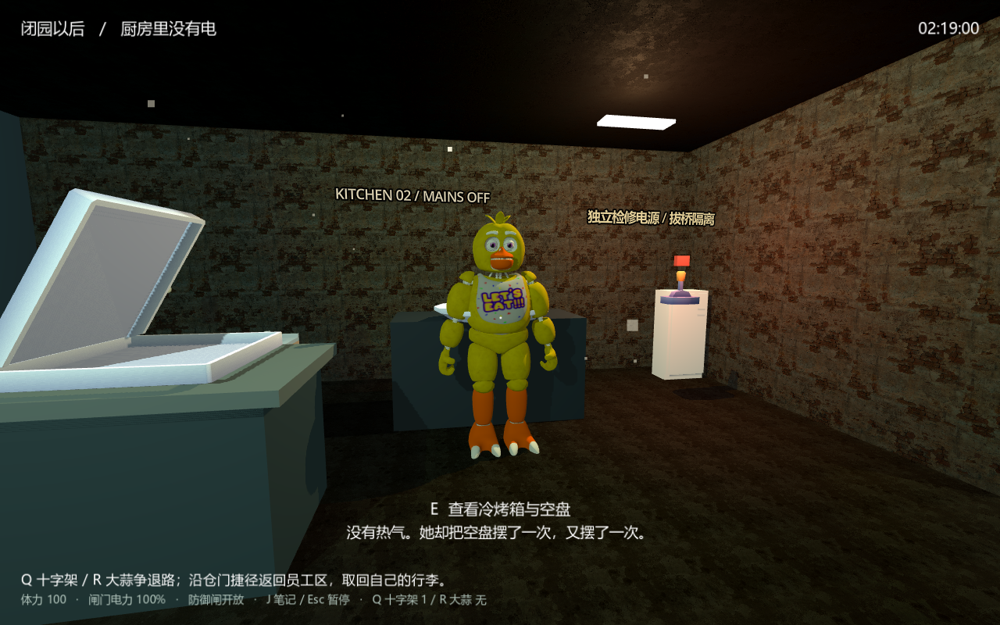
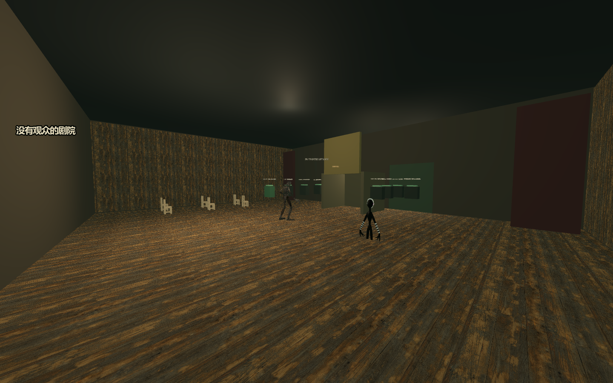
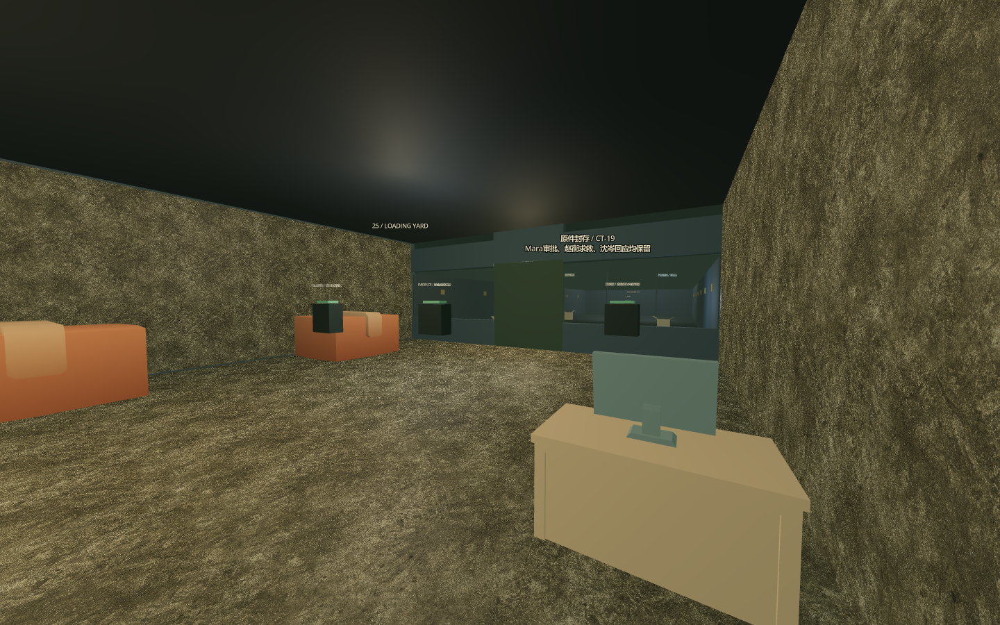

让证据开口
保全日志，核对独立触点，在剧情内的终端中修复权限。追查谁下令、谁批准，又是谁把后果藏进了报表。
终端解谜 · 原件核验 · 责任追踪一份尚未结束的夜班记录
FNAF 非官方同人 · MIDNIGHT ECHO
新监控说门关着，旧触点却显示它仍在动。
广播里那个熟悉的声音，属于已经死去的赵衡。
Windows x64 · 免费同人 · Beta RC1 候选，尚未正式发布
门后的东西，仍在等你。
沈岑走进这家闭园后的披萨店，接到了一份夜班工作。舞台上的玩偶已经停止表演，广播却仍用熟人的声音发出指令。
旧材料里留着孩子的名字。新的控制系统里，出现了不属于它的命令。有人把它们都写成了“故障”，也有人签字，让下一批设备继续出货。
越往深处走，你越需要分清：眼前的追猎来自机械、被篡改的指令，还是一份始终没有放下的冤屈。
活到天亮只是开始。
这一次，你要把真相和他们，一起带出去。
当两个系统互相矛盾，你相信哪一个？
观察、判断，再动手。
每一次处置，都要对准真正的危险。
保全日志，核对独立触点，在剧情内的终端中修复权限。追查谁下令、谁批准，又是谁把后果藏进了报表。
终端解谜 · 原件核验 · 责任追踪躲开追猎，诱导实体，落闸后验证限位与制动。切断远控之后，还要处理独立能源和仍在运转的机械。
动态逃避 · 静态防御 · 机械隔离分辨附着与故障，守住行法的窗口，保护受害者。听见孩子自己的选择，让告别不再是一场被安排好的表演。
辨识附着 · 守界 · 逐人告别网络停服，机械仍可能追来。机械停机，故事也未必结束。
从断电厨房走向旧材料间，
再走到那扇终于有人回应的窗前。



可选的深层维修区、废矿与异常空间，保留各自的探索、证据和故事。某些走廊不再遵守熟悉的楼层关系。你可以追下去，也可以带着主线证据离开。
你可以选择接桥，也可以找到隔离绕行的路。不同处置会留下不同的记录。谁被保护、哪些证据得以保全，都来自你真正做过的事。
请仙只在那一次危机中出现。告别时，孩子也不必以宽恕换取离开。
故事先讲到这里他们的名字
不是故障代码。
PRIVATE TEST / BETA RC1
0.21.0 完整依赖内测候选正在接受验收。
统一续玩、终章追猎与救援流程已经接入；正式美术和全程人工试玩仍在推进。
下载由 GitHub 核验权限：请先接受游戏私有仓库的邀请，再登录获授权的 GitHub 账号。未获授权可能显示 404。
按钮通往私有 Releases；当前 RC1 仍为 Draft，尚未向测试人员开放下载。获邀不等于可查看草稿，须等待测试版本正式分发。
免费 · Windows x64 · 整体解压运行 · 目前无手机版
终章地图和镜头目前属于可玩候选，并非最终美术。自动检查不能代替完整人工通关，旧版本试玩报告也不代表这一版已全部验收。
支线保留独立存档与非欧式布局；主线可独立通关。旧版分段存档尚无自动迁移。手机、触屏与跨机型性能尚未完成验证。
页面中的实机图标注了开发状态；首屏门廊为网页视觉概念，不是游戏实录。没有用概念画冒充完成画面。